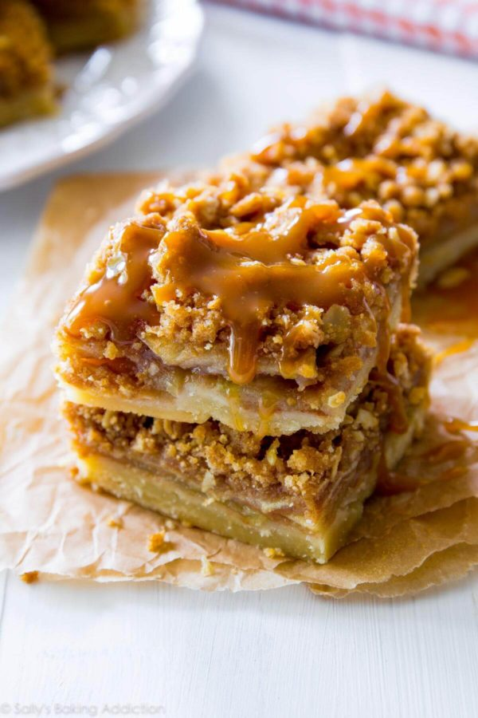

Salted Caramel Apple Pie Bars

Salty and sweet, these delicious bars are a perfect treat for your next Fourth of July party or your fall fun bash.
Ingredients
- 1/2 cup (115g) unsalted butter, melted
- 1/4 cup (50g) granulated sugar
- 1 teaspoon pure vanilla extract
- 1/4 teaspoon salt
- 1 cup (125g) all-purpose flour (spoon & leveled)
Steps
- Preheat the oven to 300°F (149°C). Line the bottom and sides of an 8-inch square baking pan with parchment paper leaving enough overhang on all sides. Set aside.
- Make the crust: Stir the melted butter, granulated sugar, vanilla, and salt together in a medium bowl. Add the flour and stir until everything is combined. Press the mixture evenly into the prepared baking pan. Bake for 15 minutes and then remove from the oven. (As the crust bakes, you can prepare the filling and streusel.)
- Make the apple filling: Combine the sliced apples, flour, granulated sugar, cinnamon, and nutmeg together in a large bowl until all of the apples are evenly coated. Set aside.
Recipe from Sally's Baking Addiction